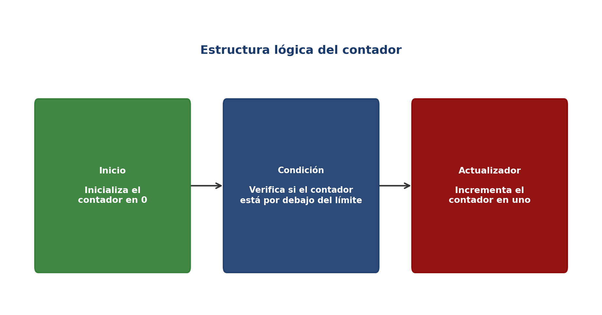
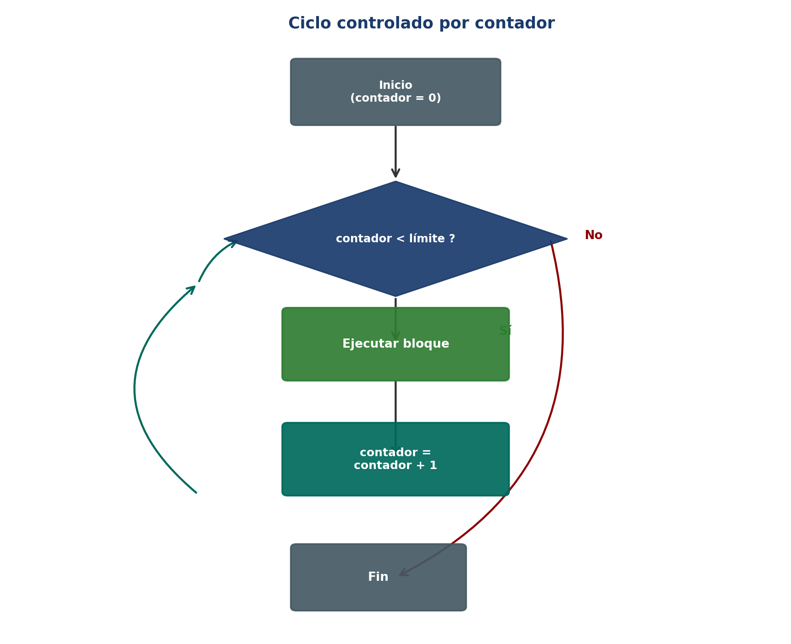
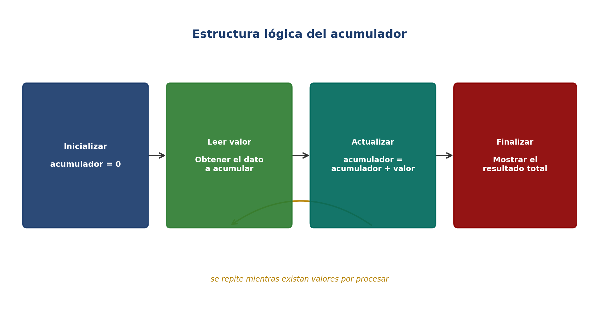
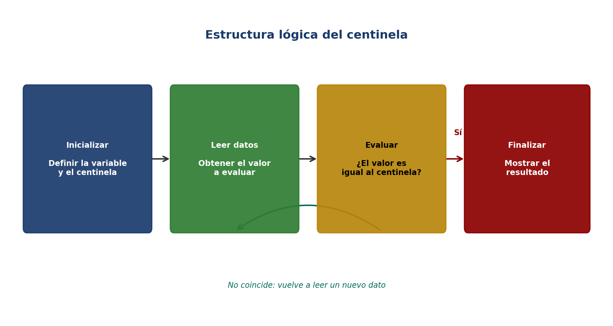
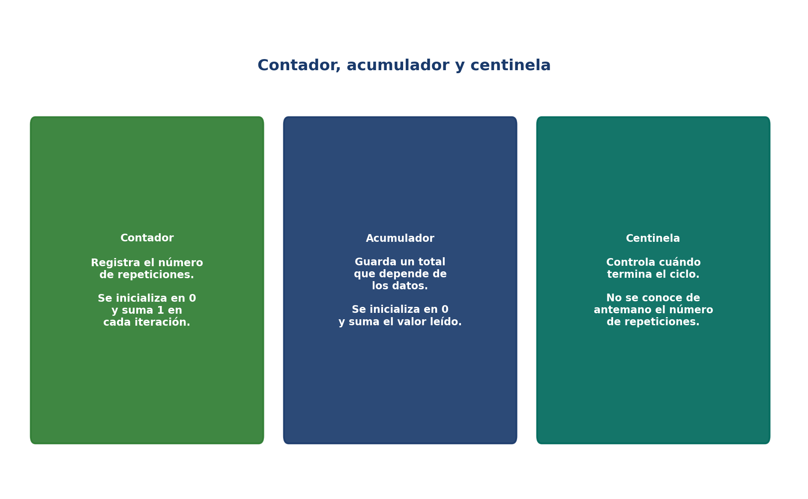

🎛️ Control de ciclos: centinelas, contador, acumulador
En la programación, los bucles permiten ejecutar una serie de instrucciones repetidamente, pero en muchos casos es necesario controlar o dar seguimiento a lo que ocurre dentro de esas repeticiones. Para ello se emplean tres mecanismos fundamentales: el contador, el acumulador y el centinela.
Estos elementos permiten determinar cuántas veces se ejecuta un ciclo, cuándo debe finalizar y cómo almacenar resultados parciales durante el proceso. Su aplicación es esencial en tareas como el cálculo de promedios, el registro de datos, la validación de entradas o la creación de menús interactivos, siendo herramientas indispensables para el desarrollo de algoritmos eficientes y estructurados.
✨ Dominar el contador, el acumulador y el centinela es lo que permite pasar de un bucle simple a un algoritmo capaz de controlar y registrar todo lo que ocurre en su interior. 🎯
🎯 Objetivos de aprendizaje
🔢Comprender el funcionamiento del contador en el control de ciclos.
➕Aplicar el acumulador para conservar resultados parciales dentro de un ciclo.
🚩Reconocer el uso del centinela para controlar la finalización de un ciclo.
🧮Aplicar el rango, el paso y los bucles anidados en la resolución de problemas.
El contador es una variable que registra el número de iteraciones realizadas dentro de un ciclo. Se inicializa antes de entrar al bucle y se actualiza en cada repetición (generalmente sumando o restando una unidad) para limitar o monitorear la ejecución. En el diseño de algoritmos, el patrón inicializar → verificar → actualizar evita bucles infinitos y facilita tareas como conteos, recorridos y control de posiciones.

Figura: Componentes de la estructura lógica de un contador — inicio, condición y actualizador.

Figura: Flujo de un ciclo controlado por contador.
Ejemplo en PSeInt
Definir contador Como Entero; contador = 0; Mientras contador < 5 Hacer Escribir 'Iteración número: ', contador; contador = contador + 1; FinMientras
🔢 El programa ejecuta cinco iteraciones (para los valores 0, 1, 2, 3 y 4). En cada repetición, el valor de contador se incrementa en 1 y se muestra en pantalla hasta que deja de cumplirse la condición contador < 5.
El acumulador es una variable que permite sumar, restar o combinar valores dentro de un ciclo, almacenando un resultado parcial que se actualiza en cada iteración. Su función es conservar el total de una operación que se repite varias veces, como el cálculo de promedios, la suma de números o la acumulación de montos. A diferencia del contador, que solo registra el número de repeticiones, el acumulador guarda un valor que depende de los datos procesados dentro del ciclo.

Figura: Ciclo lógico del acumulador — inicializar, leer valores, actualizar y finalizar.
Fórmula de actualización
acumulador = acumulador + nuevo_valor
Ejemplo en PSeInt
Definir i, numero, suma Como Entero; suma = 0; Para i = 1 Hasta 3 Con Paso 1 Hacer Escribir 'Ingrese un número: '; Leer numero; suma = suma + numero; FinPara Escribir 'La suma total es: ', suma;
➕ Es fundamental inicializar el acumulador en 0 antes de entrar al ciclo, ya que servirá como base para las operaciones que se realicen dentro de él.
El centinela es una técnica utilizada para controlar la finalización de un ciclo mediante un valor especial que indica cuándo detener la repetición. A diferencia del contador y del acumulador, en este caso no se conoce de antemano cuántas veces se ejecutará el bucle; en su lugar, el ciclo continúa hasta que el usuario o el programa introduzca un valor determinado que actúa como señal de parada.

Figura: Ciclo lógico del centinela — inicializar, leer datos, evaluar y finalizar.
Ejemplo en PSeInt
Definir numero, suma Como Entero; suma = 0; Escribir 'Ingrese un número (-1 para terminar): '; Leer numero; Mientras numero <> -1 Hacer suma = suma + numero; Escribir 'Ingrese otro número (-1 para terminar): '; Leer numero; FinMientras Escribir 'La suma total es: ', suma;
🚩 El uso de un centinela permite procesar cantidades variables de datos sin necesidad de fijar un límite previo, lo que lo hace muy útil en tareas como la lectura de registros o el ingreso de información por teclado.
En los ciclos controlados, como el Para (for), es posible definir explícitamente un rango de valores que la variable de control recorrerá, así como el paso con el que avanzará en cada iteración. Estos dos parámetros determinan cuántas veces se ejecutará el bloque de instrucciones y con qué variación numérica lo hará.
Rango ascendente
Para i = 1 Hasta 8 Con Paso 2 Hacer: Escribir 'Valor de i: ', i; FinPara Salida: 1, 3, 5, 7
Rango descendente
Para i = 8 Hasta 1 Con Paso -2 Hacer: Escribir 'Valor de i: ', i; FinPara Salida: 8, 6, 4, 2
📐 Un paso positivo hace que la variable de control aumente en cada iteración, mientras que un paso negativo hace que disminuya, permitiendo generar secuencias crecientes o decrecientes controladas.
Un bucle anidado es una estructura en la que un ciclo se encuentra dentro de otro, permitiendo realizar repeticiones múltiples y combinadas. El bucle externo controla el número total de iteraciones principales, mientras que el bucle interno se ejecuta completamente en cada una de las repeticiones del externo. Son muy útiles cuando se requiere recorrer estructuras bidimensionales, como matrices, tablas o gráficos.

Figura: Comparación de las tres técnicas de control de ciclos.
Ejemplo: tablas de multiplicar anidadas
Definir i, j, resultado Como Entero; Para i = 1 Hasta 2 Con Paso 1 Hacer Para j = 1 Hasta 3 Con Paso 1 Hacer resultado = i * j; Escribir i, ' x ', j, ' = ', resultado; FinPara FinPara
⚠️ El uso de bucles anidados debe planificarse cuidadosamente, ya que el número total de ejecuciones aumenta proporcionalmente con la cantidad de repeticiones internas.
✍️ Actividades
🔢 Actividad 1: Contador y acumulador (Individual)
Diseña en PSeInt un algoritmo que solicite las notas finales de 5 estudiantes, utilizando un contador para registrar cuántas notas se han ingresado y un acumulador para calcular la suma total. Al finalizar, el programa debe mostrar el promedio general del grupo.
📝 Producto esperado: pseudocódigo del algoritmo identificando claramente cuál variable cumple el rol de contador y cuál el de acumulador.
🔎 Enfoque: aplicar correctamente el contador y el acumulador dentro de un mismo ciclo.
👥 Actividad 2: Centinela y bucles anidados (Grupal)
En grupos de máximo tres integrantes, resuelvan las siguientes situaciones: (1) diseñen un algoritmo con centinela que permita a una tienda local del municipio registrar ventas diarias, deteniéndose cuando el usuario ingrese -1; (2) diseñen un algoritmo con bucles anidados que genere las tablas de multiplicar del 1 al 3, usando el bucle externo para las tablas y el bucle interno para los factores.
📝 Producto esperado: pseudocódigo de ambos algoritmos, identificando el valor centinela usado y la lógica de los bucles anidados.
👥 Modalidad: trabajo colaborativo en equipos de máximo tres estudiantes.
✔️ Evaluación
Cuestionario de autoevaluación sobre control de ciclos con contador, acumulador, centinela, rango, paso y bucles anidados.
📎 Anexos
Material complementario asociado a los conceptos desarrollados en esta unidad.
📗 Lógica de programación
Libro de referencia de Trejos Buriticá (2023) sobre los fundamentos de la lógica de programación.